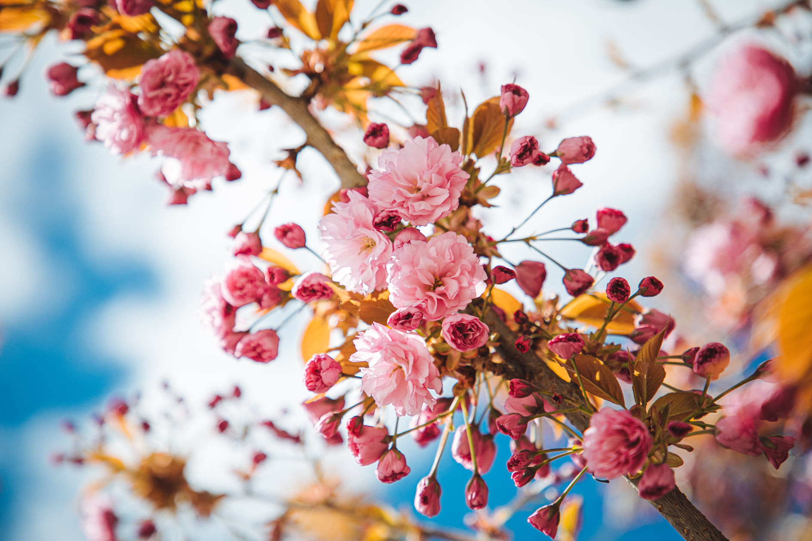
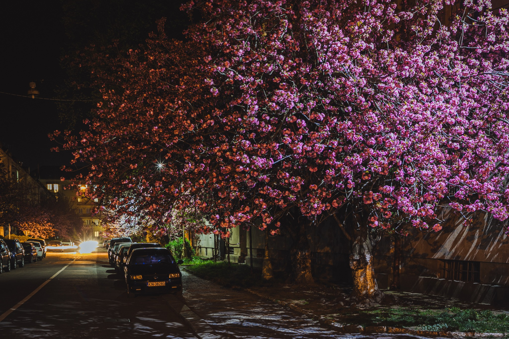
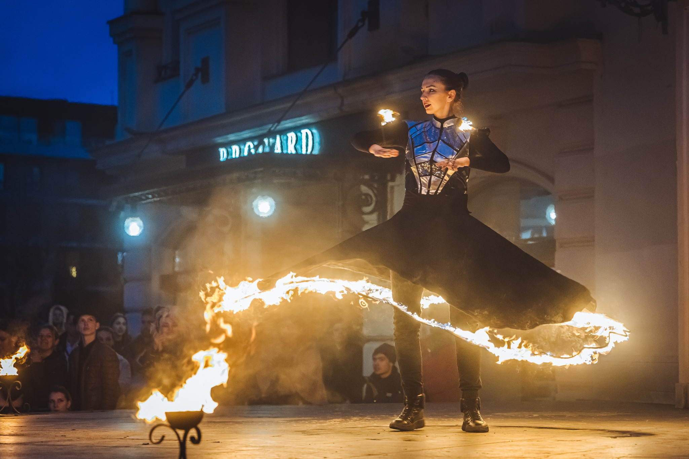
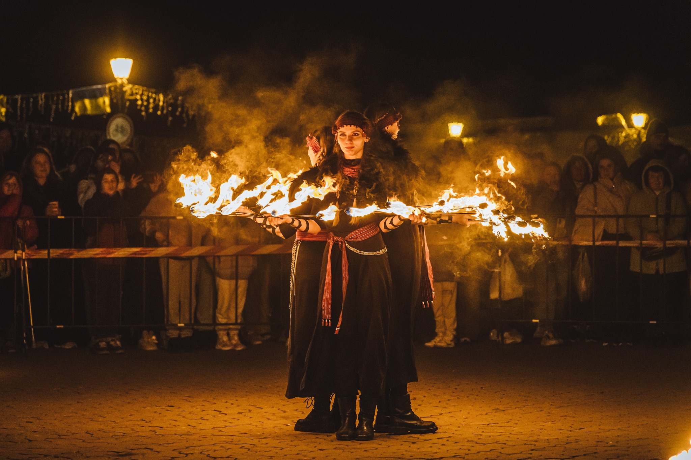
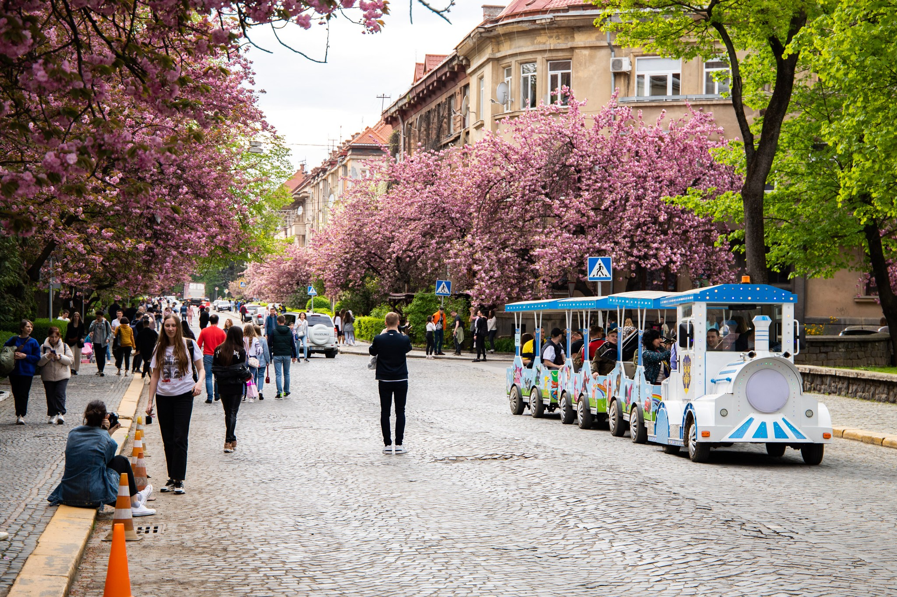

17 квітня День 1
- Відкриття фестивалю, інфостійка, старт благодійного збору
- Ярмарок, фудкорт, фотозони, інсталяції
- Мистецькі події, перформанси, дитячі активності
17–19 квітня 2026
Благодійний фестиваль на підтримку ЗСУ.
Приходь на фест — допоможи зібрати на дрони, генератори та старлінки.
Наша сила — в єдності!
пл. Театральна · Набережна Незалежності · вул. Ракоці · Міська дитяча залізниця · вул. Героїв Небесної сотні · пл. Поштова · Ботанічна набережна · Міська дитяча залізниця · пл. Фенцика · пл. Петефі · Закарпатський обласний музично-драматичний театр
Дивитися локації →Про фестиваль
Вперше про Сакура Фест як про фестиваль в Ужгороді заговорили ще у 2010-х роках. Але події не були об’єднані єдиним концептом. Тому справжнього масштабу та чітко вираженої благодійної мети він набув починаючи з 2022 року.
Сакура Фест у 2022 році — це все ще серія подій, але саме тоді закладається його сучасна концепція і з’являється головна риса — благодійна місія.
Сакура Фест у 2023 році - стає першим повноцінним роком оновленого фестивалю: з’являється об’єднуюча назва «Сакура Фест»; формується структура подій, чітко закріплюється благодійна складова. У 2023 році проведено приблизно 20–30 заходів і на підтримку війська було зібрано 180 000 грн.
Сакура Фест у 2024 році - потужний фандрейзинговий інструмент і соціально важливе явище для усього Закарпаття: ярмарки крафтових виробів, волонтерські лотереї та аукціони. Робота дитячих містечок, фотозона, артпростори. Спільними зусиллями було зібрано 243 000 грн на придбання пікапа та дронів для фронту.
Сакура Фест у 2025 році - програма поєднала японську естетику з українськими традиціями (виставки, майстер-класи), арт-квести. Ві Ужгороді з’явився сакуровий міський транспорт, відбувся потужний концерт і фестиваль вогняного мистецтва. Масштаб підтримки зріс у чотири рази — вдалося зібрати рекордні 1 052 627 грн, за які вдалося розробити 30 оптоволоконних дронів для війська.
Програма
Локації
Головна інфостійка фестивалю, інсталяція танзаку · Сакурове дерево бажань, де кожен гість може залишити своє побажання та японська фотозона для ваших спогадів
Великий ярмарок локальних виробників, творчі майстер-класи та затишний фудкорт вздовж липової алеї
Головна музична сцена фестивалю, велика зона фудкорту, дитяче ігрове містечко та видовищні виступи театру вогню Dragonfly
Ретро-автомобіль та мотоцикл у ніжному цвітінні сакур — ідеальна локація для поціновувачів авто
Тематична Великодня інсталяція
Еко-пікнік на березі Ужа, Торо Нагаші — магічна японська традиція спуску плаваючих ліхтариків з побажаннями на річці Уж
Катання на дрезині та вечірні перегляди японського кіно під відкритим небом
Містечко пластунів, традиційні закарпатські гаївки та яскравий фестиваль фарб Холі-фест
Старт традиційного доброчинного Сакурового забігу — біжимо заради допомоги війську!
Театральний фестиваль Під цвітом сакури - кращі вистави сезону в атмосфері весняного Ужгорода
Атмосфера











Мета
Фестиваль — це не лише святкова атмосфера. Його головна мета — збір коштів для ЗСУ. Наша спільна з вами ціль — 1 000 000,00 грн на дрони, генератори, зарядні станції та старлінки для захисників і захисниць.
“Краса сакур нагадує нам про життя, а наша єдність — про силу, яка допомагає підтримувати країну.”
Підтримати збір
Навіть невеликий внесок допомагає швидше закрити збір. Донатьте!

Партнери


Звітність